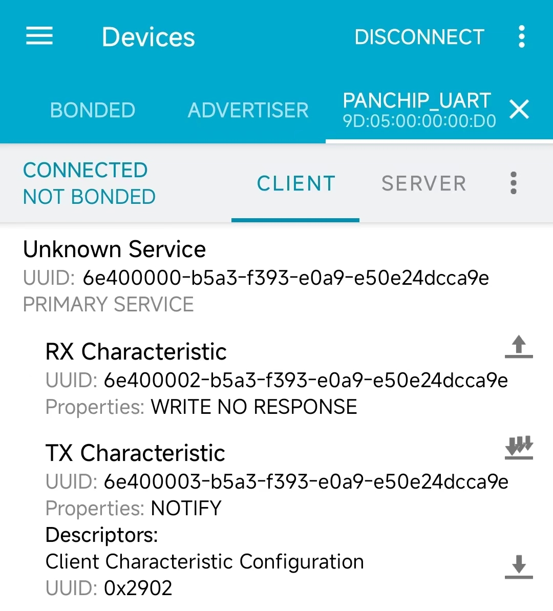
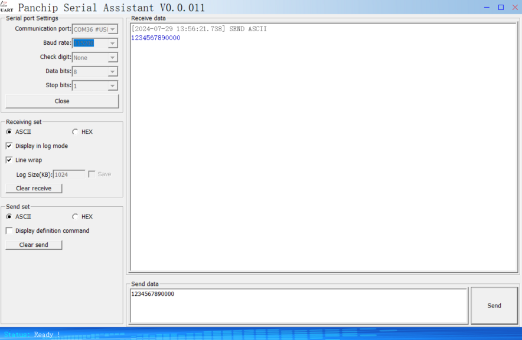
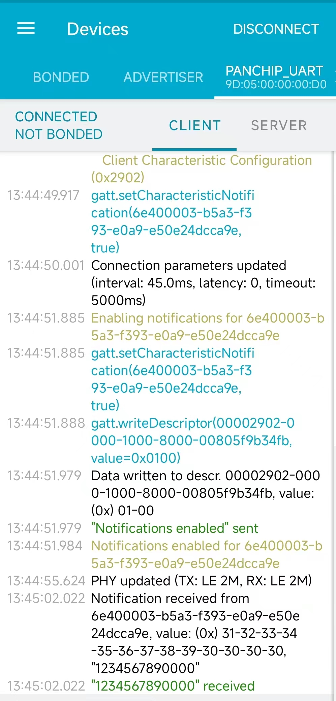
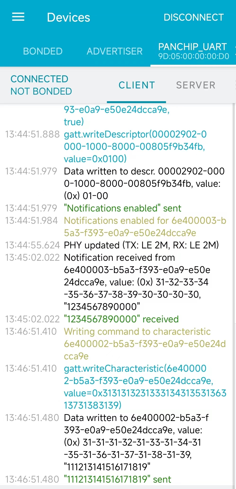
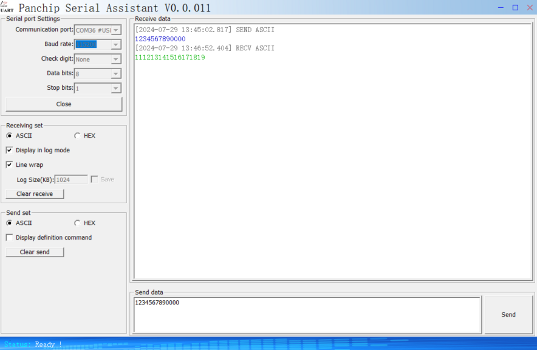

BLE APP Uart¶
1 功能概述¶
此项目演示蓝牙从机串口透传功能，从机设备和手机或主机设备连接后可以和串口模块进行数据透传。
2 环境要求¶
board:
pan107x evb或pan101x evbuart log: 打印工程的log
uart ble: 和蓝牙透传数据
手机app
nrf connect
3 编译和烧录¶
例程位置：
pan107x：
<home>\nimble\samples\solutions\ble_app_uart\keil_107xpan101x：
<home>\nimble\samples\solutions\ble_app_uart\keil_101x
使用keil进行打开项目进行编译烧录。
4 环境准备¶
uart 接线说明
pan107x：
UART LOG（波特率921600） |
PIN |
|---|---|
TX |
P16 |
RX |
P17 |
UART BLE（波特率115200） |
PIN |
|---|---|
TX |
P10 |
RX |
P24 |
pan101x：
UART LOG（波特率921600） |
PIN |
|---|---|
TX |
P11 |
RX |
P12 |
UART BLE（波特率115200） |
PIN |
|---|---|
TX |
P00 |
RX |
P01 |
5 演示说明¶
打开nrf connect App，扫描广播名称为“panchip_uart”设备，然后连接。
连上后的log及app界面如下：
Try to load HW calibration data.. DONE. - Chip Info : 0x61 - Chip CP Version : 255 - Chip FT Version : 7 - Chip MAC Address : E11000014DE5 - Chip UID : B90801465454455354 - Chip Flash UID : 4250315A3538380B01FD8B435603EF78 - Chip Flash Size : 512 KB [I] app started [I] ble stack init start... [I] Spark Controller Init Start. [I] BLE Heap size:5636 B, remain:64 B [I] Spark Controller Init OK. [I] ble host init ok -> ble thread start... [I] registered service 0x1800 with handle=1 [I] registering characteristic 0x2a00 with def_handle=2 val_handle=3 [I] registering characteristic 0x2a01 with def_handle=4 val_handle=5 [I] registered service 6e400000-b5a3-f393-e0a9-e50e24dcca9e with handle=6 [I] registering characteristic 6e400002-b5a3-f393-e0a9-e50e24dcca9e with def_handle=7 val_handle=8 [I] registering characteristic 6e400003-b5a3-f393-e0a9-e50e24dcca9e with def_handle=9 val_handle=10 [W] Device Id Address: E1 10 00 01 4D E5 [I] BLE adv start... [W] Error: UART Rx Frame Error! [E] Actual received data size: 0 [I] connection established; status=0 [I] -conn_intvl:45000 us -latency:0 -to:5000 ms [I] conn upd cmpl: conn_handle:0, itvl:7500 us, latency:0, to:5000 ms [I] conn upd cmpl: conn_handle:0, itvl:45000 us, latency:0, to:5000 ms

RX服务用于向串口发送数据，TX服务用于接收串口的数据，需要使能notify。
用串口工具发数据，app收数据的情况如下：
串口工具：

app：

用app发数据，串口工具收数据的情况如下：
app:

串口工具：

5 RAM/Flash资源使用情况¶
PAN107x:
Flash Size: 159.64k
RAM Size: 36.97 k
PAN101x:
Flash Size: 118.55k
RAM Size: 15.17 k